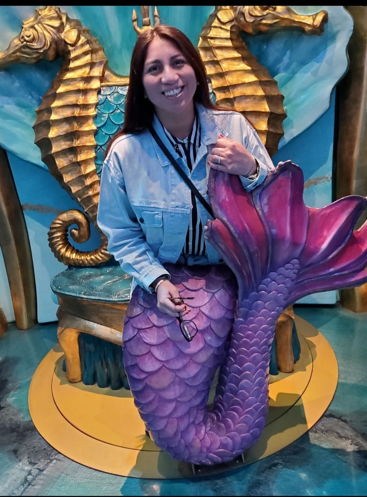
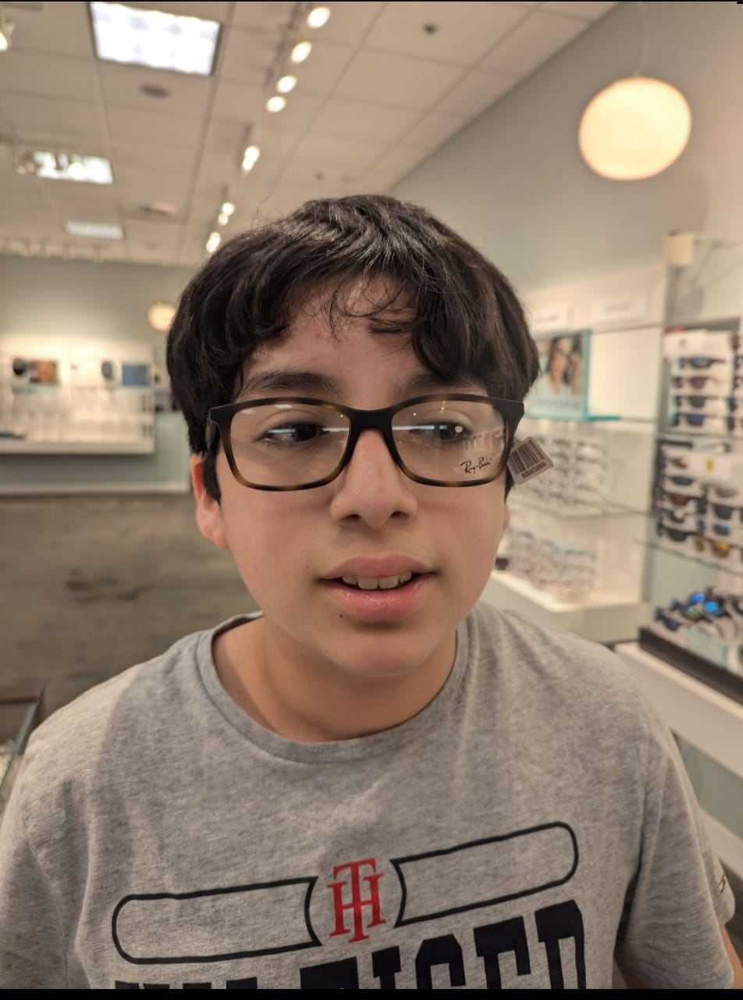

About My Family
Family has always been an essential part of my life. Their support and love have been the cornerstone of my personal and professional achievements.We enjoy spending time together, creating memories through various activities like traveling, cooking, and celebrating special moments. My family it is composed for my Wife, Alicia, my son james. My wife is pregnat we are very exciting and we are waiting an our new son.
My Family
She is Alicia, my wife, a beautiful woman who always tries her best for the family. I have known her since 2010. Fourteen years ago, we met through a dating app. She was very lonely, and I was looking for my true love. I think people don’t know what their future holds, and for us, it has been a challenging journey. Now, we are far from home, together, trying to build a new path
He is my older son James, he is always happy and he enjoy us with his ocurrencies he is my engine to surppass all the obstacles. He came into our lives unexpectedly, like a hurricane that shook us, but in the end, he helped us come together and form a family, becoming our driving force in life.